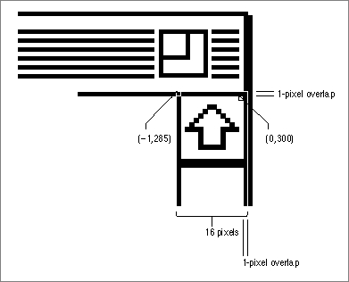

Legacy Document
Important: The information in this document is obsolete and should not be used for new development.
Important: The information in this document is obsolete and should not be used for new development.


Creating and Displaying a Control
To create a control in one of your application's windows, use theGetNewControlorNewControlfunction. You should usually useGetNewControl, which takes information about the control from a control resource (that is, a 'CNTL'resource) in a resource file. Like window resources, control resources isolate descriptive information from your application code for ease of modification--especially for translation to other languages. The rest of this section describes how to useGetNewControl. Although it's generally not recommended, you can also use theNewControlfunction and pass it the necessary descriptive information in individual parameters instead of using a control resource. TheNewControl function is described on page 5-82.When you use
GetNewControl, you pass it the resource ID of the control resource, and you pass it a pointer to a window.The function then creates a data structure (called a control record) of typeControlRecordfrom the information in the control resource, adds the control record to the control list for your window, and returns as its function result a handle to the control. (You use a control's handle when referring to the control in most other Control Manager routines; when you create scroll bars or pop-up menus for a window, you should store their handles in one of your application's own data structures for later reference.)When you specify in the control resource that a control is initially visible and you use the
GetNewControlfunction, the Control Manager uses the control's control definition function to draw the control inside its window. The Control Manager draws the control immediately, without using your window's standard updating mechanism. If you specify that a control is invisible, you can use theShowControlprocedure when you want to draw the control. Again, the Control Manager draws the control without using your window's standard updating mechanism. (Of course, even when the Control Manager draws the control, it might be completely or partially obscured from the user by overlapping windows or other objects.)When your application receives an update event for a window that contains controls, you use the
UpdateControlsprocedure in your application's standard window- updating code to redraw all the controls in the update region of the window.
When you use the Window Manager procedure
- Note
- When you use the Dialog Manager to implement buttons, radio buttons, checkboxes, or pop-up menus in alert boxes and dialog boxes, Dialog Manager routines automatically use Control Manager routines to create and update these controls for you. If you implement any controls other than buttons, radio buttons, checkboxes, and pop-up menus in alert or dialog boxes--and whenever you implement any controls (scroll bars, for example) in your application's windows--you must explicitly use either the
GetNewControlor theNewControlfunction to create the controls. You must always use theUpdateControlsprocedure to update controls you put in your own windows.
DisposeWindoworCloseWindowto remove a window, either procedure automatically removes all controls associated with the window and releases the memory they occupy.When you no longer need a control in a window that you want to keep, you can use the
DisposeControlprocedure, described on page 5-108, to remove it from the screen, delete it from its window's control list, and release the control record and all other associated data structures from memory. You can use theKillControlsprocedure, described on page 5-108, to dispose of all of a window's controls at once.The next section, "Creating a Button, Checkbox, or Radio Button," provides a general discussion of the control resource as well as a more detailed description of the use of the control resource to specify buttons, checkboxes, and radio buttons in your application's windows. The two following sections, "Creating Scroll Bars" (beginning on page 5-19) and "Creating a Pop-Up Menu" (beginning on page 5-22), describe those elements of the control resource that differ from the control resources for buttons, checkboxes, and radio buttons. "Updating a Control" beginning on page 5-25 then offers an example of how you can use the
UpdateControlsprocedure within your window-updating code.
- Note
- For the Control Manager to draw a control properly inside a window, the window must have its upper-left corner at local coordinates (0,0). If you use the QuickDraw procedure
SetOriginto change a window's local coordinate system, be sure to change it back--so that the upper-left corner is again at (0,0)--before drawing any of its controls. Because many Control Manager routines can (at least potentially) redraw a control, the safest policy after changing a window's local coordinate system is to change the coordinate system back before calling any Control Manager routine.Creating a Button, Checkbox, or Radio Button
Figure 5-10 shows a simple example of a button placed in a window of typenoGrowDocProc--which you normally use to create a modeless dialog box.
Although you usually use the Dialog Manager to create dialog boxes and their
buttons, sometimes you might use the Window Manager and the Control Manager instead. The chapter "Dialog Manager" in this book explains why the use of the
Window and Control Managers is sometimes preferable for this purpose.Figure 5-10 A button in a simple window
Listing 5-1 shows an application-defined routine,
MyCreatePlaySoundsWindow, that uses theGetNewControlfunction to create the button shown in Figure 5-10.Listing 5-1 Creating a button for a window
FUNCTION MyCreatePlaySoundsWindow: OSErr; VAR myWindow: WindowPtr; BEGIN MyCreatePlaySoundsWindow := noErr; myWindow := GetNewWindow(rPlaySoundsModelessWindow, NIL, POINTER(-1)); IF myWindow <> NIL THEN BEGIN {use the window's refCon to identify this window} SetWRefCon(myWindow, LongInt(kMyPlaySoundsWindow)); SetPort(myWindow); gMyPlayButtonCtlHandle := GetNewControl(rPlayButton, myWindow); IF (gMyPlayButtonCtlHandle = NIL) THEN MyCreatePlaySoundsWindow := kControlErr; END ELSE MyCreatePlaySoundsWindow := kNoSoundWindow; END;TheMyCreatePlaySoundsWindowroutine begins by using the Window Manager functionGetNewWindowto create a window; a pointer to that window is passed toGetNewControl. Note that, as explained in the chapter "Dialog Manager" in this book, you could create a modeless dialog box more easily by using the Dialog Manager functionGetNewDialogand specifying its controls in an item list ('DITL') resource.For the resource ID of a control resource, the
MyCreatePlaySoundsWindowroutine defines anrPlayButtonconstant, which it passes to theGetNewControlfunction. Listing 5-2 shows how this control resource appears in Rez input format.Listing 5-2 Rez input for a control resource
resource 'CNTL' (rPlayButton, preload, purgeable) { {87, 187, 107, 247}, /*rectangle*/ 0, /*initial setting*/ visible, /*make control visible*/ 1, /*maximum setting*/ 0, /*minimum setting*/ pushButProc, /*control definition ID*/ 0, /*reference value*/ "Play" /*title*/ };You supply the following information in the control resource for a button, checkbox, radio button, or scroll bar:
As explained in "Creating a Pop-Up Menu" beginning on page 5-22, the values you supply in a control resource for a pop-up menu differ from those you specify for other buttons, checkboxes, radio buttons, and scroll bars.
- a rectangle, specified by coordinates local to the window, that determines the control's size and location
- the initial setting for the control
- a constant (either
visibleorinvisible) that specifies whether the control should be drawn on the screen immediately- the maximum setting for the control
- the minimum setting for the control
- the control definition ID
- a reference value, which your application may use for any purpose
- the title of the control; or, for scroll bars, an empty string
Buttons are drawn to fit the rectangle exactly. To allow for the tallest characters in
the system font, there should be at least a 20-point difference between the top and bottom coordinates of the rectangle. Listing 5-2 uses a rectangle with coordinates (87,187,107,247) to describe the size and location of the control within the window. Remember that the Control Manager will not draw controls properly unless the upper-left corner of the window coincides with the coordinates (0,0).In Listing 5-2, the initial and minimum settings for the button are 0 and the maximum setting is 1. In control resources for buttons, checkboxes, and radio buttons, supply these values as the initial settings:
Because the
- For buttons, which don't retain a setting, specify a value of 0 for the initial and minimum settings and 1 for the maximum setting.
- For checkboxes and radio buttons, which retain an on-or-off setting, specify a value of 0 when you want to the control to be initially off. To turn a checkbox or radio button on, assign it an initial setting of 1. In response, the Control Manager places an X in a checkbox or a black dot in a radio button.
visibleidentifier is specified in this example, the control is drawn immediately in its window. If you use theinvisibleidentifier, your control is not drawn until your application uses theShowControlprocedure. When you want to make a visible control invisible, you can use theHideControlprocedure.In Listing 5-2, the maximum setting for the button is 1, which you, too, should specify in your control resources as the maximum setting for buttons, checkboxes, and radio buttons. In Listing 5-2, the minimum setting for the button is 0, which you, too, should specify in your control resources as the minimum setting for buttons, checkboxes, and radio buttons.
In Listing 5-2, the
pushButProcconstant is used to specify the control definition ID. Use thecheckBoxProcconstant to specify a checkbox and theradioButProcconstant to specify a radio button.Listing 5-2 specifies a reference value of 0. Your application can use this value for any purpose (except when you add the
popupUseAddResMenuvariation code to thepopupMenuProccontrol definition function, as described in "Creating a Pop-Up Menu" beginning on page 5-22).Finally, the string
"Play"is specified as the title of the control. Buttons, checkboxes,
and radio buttons require a title that communicates their purpose to the user. (The chapter "Dialog Manager" in this book offers extensive guidelines on appropriate titles for buttons.)When specifying a title, make sure it fits in the control's rectangle; otherwise, the
Control Manager truncates the title. For example, it truncates the titles of checkboxes
and radio buttons on the right in Roman scripts, and it centers and truncates both ends of button titles.If you localize your application for use with worldwide versions of system software, the titles may become longer or shorter. Translated text is often 50 percent longer than U.S. English text. You may need to resize your controls to accommodate the translated text.
By default, the Control Manager displays control titles in the system font. To make it easier to localize your application for use with worldwide versions of system software, you should not change the font. Do not use a smaller font, such as 9-point Geneva; some script systems, such as KanjiTalk, require 12-point fonts. You can spare yourself future localization effort by leaving all control titles in the system font.
Follow book-title style when you capitalize control titles. In general, capitalize one-word titles and capitalize nouns, adjectives, verbs, and prepositions of four or more letters in multiple-word titles. You usually don't capitalize words such as in, an, or and. For capitalization rules, see the Apple Publications Style Guide, available from APDA.
The Control Manager allows button, checkbox, and radio button titles of multiple lines. When specifying a multiple-line title, end each line with the ASCII character code $0D (carriage return). If the control is a button, each line is horizontally centered, and the
font leading is inserted between lines. (The height of each line is equal to the distance from the ascent line to the descent line plus the leading of the font used. Be sure to make the total height of the rectangle greater than the number of lines times this height.) If
the control is a checkbox or a radio button, the text is justified as appropriate for the user's current script system, and the checkbox or button is vertically centered within
its rectangle.Figure 5-11 shows the Play Sounds window with four additional controls: radio buttons titled Droplet, Quack, Simple Beep, and Wild Eep.
Figure 5-11 Radio buttons in a simple window
Only one of these radio buttons can be on at a time. Listing 5-3 initially sets the Droplet radio button to 1, turning it on by default. This listing also shows the control resources for the other buttons, all initially set to 0 to turn them off.
For a checkbox or a radio button, always allow at least a 16-point difference between the top and bottom coordinates of its rectangle to accommodate the tallest characters in the system font.
Listing 5-3 Rez input for the control resources of radio buttons
resource 'CNTL' (cDroplet, preload, purgeable) { {13, 23, 31, 142},/*rectangle of control*/ 1, /*initial setting*/ visible, /*make control visible*/ 1, /*maximum setting*/ 0, /*minimum setting*/ radioButProc, /*control definition ID*/ 0, /*reference value*/ "Droplet" /*control title*/ }; resource 'CNTL' (cQuack, preload, purgeable) { {31, 23, 49, 142},/*rectangle of control*/ 0, /*initial setting*/ visible, 1, 0, radioButProc, 0, "Quack"}; resource 'CNTL' (cSimpleBeep, preload, purgeable) { {49, 23, 67, 142},/*rectangle of control*/ 0, /*initial setting*/ visible, 1, 0, radioButProc, 0, "Simple Beep"}; resource 'CNTL' (cWildEep, preload, purgeable) { {67, 23, 85, 142},/*rectangle of control*/ 0, /*initial setting*/ visible, 1, 0, radioButProc, 0, "Wild Eep"};Creating Scroll Bars
When you define the control resource for a scroll bar, specify thescrollBarProcconstant for the control definition ID. Typically, you make the scroll bar invisible and specify an initial value of 0, a minimum value of 0, and a maximum value of 0, and you supply an empty string for the title.After you create a window, use the
GetNewControlfunction to create the scroll bar you've defined in the control resource and to attach that scroll bar to the window. Use theMoveControl,SizeControl,SetControlMaximum, andSetControlValueprocedures to adjust the location, size, and settings of the scroll bars, and then use theShowControlprocedure to display the scroll bars.In your window-handling code, make the maximum setting the maximum area you want to allow the user to scroll. Most applications allow the user to drag the size box and click the zoom box to change the size of windows, and they allow the user to add information to and remove it from documents. To allow users to perform these actions, your application needs to calculate a changing maximum setting based upon the document's current size and its window's current size. For new documents that have no content to scroll to, assign an initial value of 0 as the maximum setting in the control resource; the control definition function automatically makes a scroll bar inactive when its minimum and maximum settings are identical. Thereafter, your window-handling routines should set and maintain the maximum setting, as described in "Determining and Changing Control Settings" beginning on page 5-34.
By convention, a scroll bar is 16 pixels wide, so there should be a 16-point difference between the left and right coordinates of a vertical scroll bar's rectangle and between the top and bottom coordinates of a horizontal scroll bar's rectangle. (If you don't provide a 16-pixel width, the Control Manager scales the scroll bar to fit the width you specify.) A standard scroll bar should be at least 48 pixels long, to allow room for the scroll arrows and scroll box.
The Control Manager draws lines that are 1 pixel wide for the rectangle enclosing the scroll bar. As shown in Figure 5-12, the outside lines of a scroll bar should overlap the lines that the Window Manager draws for the window frame.
Figure 5-12 How a scroll bar should overlap the window frame

To determine the rectangle for a vertical scroll bar, perform the following calculations and use their results in your control resource. (Do not include the area of the title bar in your calculations.)
To determine the rectangle for a horizontal scroll bar, perform the following calculations and use their results in your control resource.
- top coordinate = combined height of any items above the scroll bar - 1
- left coordinate = width of window - 15
- bottom coordinate = height of window - 14
- right coordinate = width of window + 1
The top coordinate of a vertical scroll bar is -1, and the left coordinate of a horizontal scroll bar is -1, unless your application uses part of the window's typical scroll bar areas (in particular, those areas opposite the size box) for displaying information or specifying additional controls. For example, your application may choose to display the current page number of a document in the lower-left corner of the window--that is, in a small area to the left of its window's horizontal scroll bar. See Macintosh Human Interface Guidelines for a discussion of appropriate uses of a window's scroll bar areas for additional items and controls.
- top coordinate = height of window - 15
- left coordinate = combined width of any items to the left of the scroll bar - 1
- bottom coordinate = height of window + 1
- right coordinate = width of window - 14
Just as the maximum settings of a window's scroll bars change when the user resizes the document's window, so too do the scroll bars' coordinate locations change when the user resizes the window. Although you must specify an initial maximum setting and location in the control resource for a scroll bar, your application must be able to change them dynamically--typically, by storing handles to each scroll bar in a document record when you create a window, and then by using Control Manager routines to change control settings (as described in "Determining and Changing Control Settings" beginning on page 5-34) and sizes and locations of controls (as described in "Moving and Resizing Scroll Bars" beginning on page 5-60).
Listing 5-4 shows a window resource (described in the chapter "Window Manager" in this book) for creating a window, and two control resources for creating the window's vertical and horizontal scroll bars. The rectangle for the initial size and shape of the window is specified in global coordinates, of course, and the rectangles for the two scroll bars are specified in coordinates local to the window.
Listing 5-4 Rez input for resources for a window and its scroll bars
/*initial window*/ resource 'WIND' (rDocWindow, preload, purgeable) { {64, 60, 314, 460}, /*initial rectangle for window*/ zoomDocProc, invisible, goAway, 0x0, "untitled" }; /*initial vertical scroll bar*/ resource 'CNTL' (rVScroll, preload, purgeable) { {-1, 385, 236, 401}, /*initial rectangle for control*/ /*initial setting, visibility, max, min, ID, refcon, title*/ 0, invisible, 0, 0, scrollBarProc, 0, "" }; /*initial horizontal scroll bar*/ resource 'CNTL' (rHScroll, preload, purgeable) { {235, -1, 251, 386}, /*initial rectangle for control*/ /*initial setting, visibility, max, min, ID, refcon, title*/ 0, invisible, 0, 0, scrollBarProc, 0, "" };Listing 5-5 shows an application-defined procedure calledDoNewthat uses theGetNewWindowandGetNewControlfunctions to create a window and its scroll bars from the resources in Listing 5-4.Listing 5-5 Creating a document window with scroll bars
PROCEDURE DoNew (newDocument: Boolean; VAR window: WindowPtr); VAR good: Boolean; windStorage: Ptr; myData: MyDocRecHnd; BEGIN {use GetNewWindow or GetNewCWindow to create the window here} myData := MyDocRecHnd(NewHandle(SIZEOF(MyDocRec))); {create document rec} {test for errors along the way; if there are none, create the scroll } { bars and save their handles in myData} IF good THEN BEGIN {create the vertical scroll bar and save its handle} myData^^.vScrollBar := GetNewControl(rVScroll, window); {create the horizontal scroll bar and save its handle} myData^^.hScrollBar := GetNewControl(rHScroll, window); good := (vScrollBar <> NIL) AND (hScrollBar <> NIL); END; IF good THEN BEGIN {adjust size, location, settings, and visibility of scroll bars} MyAdjustScrollBars(window, FALSE); {perform other initialization here} IF NOT newDocument THEN ShowWindow(window); END; {clean up here} END; {DoNew}TheDoNewroutine uses Window Manager routines to create a window; its window resource specifies that the window is invisible. The window resource specifies an initial size and location for the window, but because the window is invisible, this window is not drawn.Then
DoNewcreates a document record and stores a handle to it in themyDatavariable. The SurfWriter sample application uses this document record to store the data that the user creates in this window--as well as handles to the scroll bars that it creates. The SurfWriter sample application later uses these control handles to handle scrolling through the document and to move and resize the scroll bars when the user resizes the window. (See the chapter "Window Manager" in this book for more information about creating such a document record.)To create scroll bars,
DoNewusesGetNewControltwice--once for the vertical scroll bar and once for the horizontal scroll bar. TheGetNewControlfunction returns a control handle;DoNewstores these handles in thevScrollBarandhScrollBarfields of its document record for later reference.Because the window and the scroll bars are invisible, nothing is drawn onscreen
yet for the user. Before drawing the window and its scroll bars,DoNewcalls
another application-defined procedure,MyAdjustScrollBars. In turn,MyAdjustScrollBarscalls other application-defined routines that move and
resize the scroll bars to fit the window and then calculate the maximum settings of
these controls. (Listing 5-14 on page 5-36 shows theMyAdjustScrollBarsprocedure.)After creating the window and its scroll bars, and then sizing and positioning them appropriately,
DoNewuses the Window Manager procedureShowWindowto display the window with its scroll bars.Creating a Pop-Up Menu
The values you specify in a control resource for a pop-up menu differ from those you specify for other controls. The control resource for a pop-up menu contains the
following information:
Figure 5-13 on the next page shows a pop-up menu; Listing 5-6 shows the control resource that creates this pop-up menu. (The chapter "Menu Manager" in this book recommends typical uses of pop-up menus and describes the relation between pop-up menus and menus you display in the menu bar.)
- a rectangle, specified by coordinates local to the window, that determines the size and location of the pop-up title and pop-up box
- the alignment of the pop-up title with the pop-up box
- a constant (either
visibleorinvisible) that specifies whether the control should be drawn on the screen immediately- the width of the pop-up title
- the resource ID of the
'MENU'resource describing the pop-up menu items- the control definition ID
- a reference value, which your application may use for any purpose
- the title of the control
Listing 5-6 Rez input for the control resource of a pop-up menu
resource 'CNTL' (kPopUpCNTL, preload, purgeable) { {90, 18, 109, 198}, /*rectangle of control*/ popupTitleLeftJust, /*title position*/ visible, /*make control visible*/ 50, /*pixel width of title*/ kPopUpMenu, /*'MENU' resource ID*/ popupMenuCDEFProc, /*control definition ID*/ 0, /*reference value*/ "Speed:" /*control title*/ };Listing 5-6 specifies a rectangle with the coordinates (90,18,109,198). Figure 5-14 illustrates the rectangle for this pop-up menu.Figure 5-14 Dimensions of a sample pop-up menu
Listing 5-6 uses the
popupTitleLeftJustconstant to specify the position of the control title. Specify any combination of the following constants (or their values) to inform the Control Manager where and how to draw the pop-up menu's title:If
GetNewControlcompletes successfully, it sets the value of thecontrlValuefield
of the control record by assigning to that field the item number of the first menu item. When the user chooses a different menu item, the Control Manager changes thecontrlValuefield to that item number.When you create pop-up menus, your application should store the handles for them; for example, in a record pointed to by the
refConfield of a window record or a dialog record. (See the chapters "Window Manager" and "Dialog Manager" in this book for more information about the window record and the dialog record.) Storing these handles, as shown in the following code fragment, allows your application to respond later to users' choices in pop-up menus:
myData: MyDocRecHnd; window: WindowPtr; myData^^.popUpControlHandle := GetNewControl(kPopUpCNTL, window);Listing 5-6 specifies 50 pixels (in place of a maximum setting) as the width of the control title. After it creates the control, the Control Manager sets the maximum value in the pop-up menu's control record to the number of items in the pop-up menu. Figure 5-14 illustrates this title width for the pop-up menu.Listing 5-6 uses a
kPopUpMenuconstant to specify the resource ID of a'MENU'resource (in place of a minimum setting for the control). (See the chapter "Menu Manager" in this book for a description of the'MENU'resource type.) After it creates the control, the Control Manager assigns 1 as the minimum setting in the pop-up menu's control record.
You can also specify a different control definition ID by adding any or all of the following constants (or the variation codes they represent) to the
- IMPORTANT
- When using the ResEdit application, version 2.1.1, you must use the same resource ID when specifying the menu resource and the control resource that together define a pop-up menu.

popupMenuProcconstant:
CONST popupFixedWidth = $0001; {use fixed-width control} popupUseAddResMenu = $0004; {use resource for menu items} popupUseWFont = $0008; {use window font}The reference value that you specify in the control resource (and stored by the Control Manager in thecontrlRfConfield of the control record) is available for your application's use. However, if you specifypopupUseAddResMenuas a variation code, the Control Manager coerces the value in thecontrlRfConfield of the control record
to the typeResTypeand then usesAppendResMenuto add items of that type to the pop-up menu. For example, if you specify a reference value ofLongInt('FONT')as the reference value, the control definition function appends a list of the fonts installed
in the system to the menu associated with the pop-up menu. After the control has been created, your application can use the control record'scontrlRfConfield for whatever use it requires. You can determine which menu item is currently chosen by callingGetControlValue.Whenever the pop-up menu is redrawn, its control definition function calls the Menu Manager procedure
CalcMenuSize. This procedure recalculates the size of the
menu associated with the control (to allow for the addition or deletion of items in the menu). The pop-up control definition function may also update the width of the pop-
up menu to the sum of the width of the pop-up title, the width of the longest item in the menu, the width of the downward-pointing arrow, and a small amount of white space. As previously described, your application can override this behavior by adding the variation codepopupFixedWidthto the pop-up control definition ID.You should not use the Menu Manager function
GetMenuHandleto obtain a handle to
a menu associated with a pop-up control. If necessary, you can obtain the menu handle (and the menu ID) of a pop-up menu by dereferencing thecontrlDatafield of the pop-up menu's control record. ThecontrlDatafield of a control record is a handle to a block of private information. For pop-up menu controls, this field is a handle to a pop-up private data record, which is described on page 5-77.Updating a Control
Your program should use theUpdateControlsprocedure upon receiving an update event for a window that contains controls such as scroll bars. (Window Manager routines such asSelectWindow,ShowWindow, andBringToFrontdo not automatically
callUpdateControlsto display the window's controls. Instead, they merely add
the appropriate regions to the window's update region. This in turn generates an
update event.)
When your application receives an update event for a window that contains controls, use the
- Note
- The Dialog Manager automatically updates the controls you use in alert boxes and dialog boxes.
UpdateControlsprocedure in your window-updating code to redraw all the controls in the update region of the window. CallUpdateControlsafter using the Window Manager procedureBeginUpdateand before using the Window Manager procedureEndUpdate.When you call
UpdateControls, you pass it parameters specifying the window to
be updated and the window area that needs updating. Use the visible region of
the window's graphics port, as referenced in the port'svisRgnfield, to specify the window's update region.Listing 5-7 shows an application-defined routine,
DoUpdate, that responds to an update event. TheDoUpdateroutine calls the Window Manager procedureBeginUpdate. To redraw this portion of the window,DoUpdatethen calls another of its own procedures,MyDrawWindow.Listing 5-7 Responding to an update event for a window
PROCEDURE DoUpdate (window: WindowPtr); VAR windowType: Integer; BEGIN windowType := MyGetWindowType(window); CASE windowType OF kMyDocWindow: BEGIN BeginUpdate(window); MyDrawWindow(window); EndUpdate(window); END; {of updating document windows} {handle other window types----modeless dialogs, etc.----here} END; {of windowType CASE} END; {of DoUpdate}Listing 5-8 illustrates how the SurfWriter sample application updates window controls and other window contents by using its own application-defined routine,MyDrawWindow. To draw only those controls in the window's update region,MyDrawWindowcallsUpdateControls. To draw the size box in the lower-right corner of the window,MyDrawWindowcalls the Window Manager procedureDrawGrowIcon. Finally,MyDrawWindowredraws the appropriate information contained in the user's document. Because the SurfWriter application uses TextEdit for all text editing in the window contents, Listing 5-8 calls the TextEdit procedureTEUpdate. (TextEdit is described in detail in Inside Macintosh: Text.)Listing 5-8 Redrawing the controls in the update region
PROCEDURE MyDrawWindow (window: WindowPtr); VAR myData: MyDocRecHnd; BEGIN {draw the contents of the window} SetPort(window); myData := MyDocRecHnd(GetWRefCon(window)); HLock(Handle(myData)); WITH window^ DO BEGIN EraseRect(portRect); UpdateControls(window, visRgn); DrawGrowIcon(window); TEUpdate(portRect, myData^^.editRec); {redraw text} END; HUnLock(Handle(myData)); END; {MyDrawWindow}For more information about updating window contents, see the chapter "Window Manager" in this book.